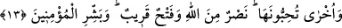

alış veriş etmekten sakınması gerekir.
Hâfız demiştir ki:
Bir iş edelim, yoksa utanç meydana gelecek
Zira bu can metaını bir gün başka bir cihana çekip götüreceğiz.
Mârifet incisini elde et ki, kendinle beraber götüresin
Altın ve gümüş başkalarının nasibidir.
Ey gönül, sana bir kurtuluş yolu göstereyim, bir hayırda bulunayım
Günahla övünme, ancak zahitlik de taslama.
Mârifetleri kazanmada ahmak divâne
Paha biçilmez inciler verir, süslü boncuklar alır.
Câmî, cânını dosta fedâ et
Zira bu yolda en küçük iş, rûh fedâ etmektir.
13. Seveceğiniz başka bir şey daha var: Allah’tan yardım ve yakın bir fetih.
Müminleri (bunlarla) müjdele.
“Seveceğiniz başka bir şey daha var: Allah’tan yardım ve yakın bir fetih.” Yâni
sizin için bu büyük nimetlere eklenecek imrendiğiniz diğer âcil bir nimet daha var.
Kureyşli düşmanlarınıza ve diğerlerine karşı yardım ve çok yakın fetihtir. Burada,
dünyayı âhirete tercih edenlere bir sitem ve onu sevmelerinden dolayı bir azarlama
vardır.
Kureyşli düşmanlarınza ve diğerlerine karşı yardım vardır. “Yakın bir fetih” ifâdesi
yardım kelimesi üzerine atfedilmiştir. Fetih çeşitleri Fetih sûresinde açıklanmıştır.
Oraya bakınız.
Kâşifî demiştir ki: “Maksad Mekke’nin fethidir, ya da Rum ve Fars’ın fethidir. İbn-i
Atâ buyurmuştur ki “nasr”dan murad tevhiddir ve “fetih” ten murad Melîk-i Mecîd’in
cemâline nazar etmektir.”
Bu âyet-i kerîme şuna da işâret etmektedir: Kesin delile dayalı yakînî îman ve
düşmanla savaşmaktan ibâret olan küçük cihad yolunda malı ve canı gereği gibi sarf
etmek, her ne kadar karlı bir ticaret ise de, bu cihadın sâhipleri henüz bir takım
karşılıklar ve maksadlar peşinde olmaktan kurtulamamışlardır. Bu sebeple nefisle savaş
olan büyük cihad yolunun sâlikleri için bu ticaretten başka daha kârlı ve daha üstün bir
ticaret daha vardır. O da melekûtî bir te’yid ve nurlu bir keşif olan Allah’tan bir yardım
ve rızâ makamını elde etme, sıfatların tecellîlerini mutalea etme ve kalp makamına
yakın bir ulaşmadır.
Cenab-ı Hak, îman ile cihad’a ticaret adını verdi. Çünkü, kulların zulmânî (karanlık)